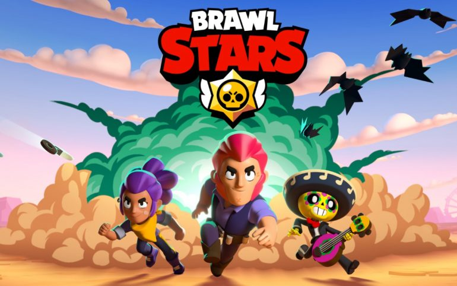
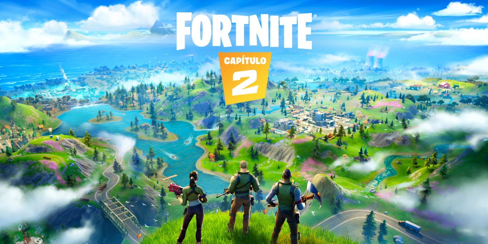
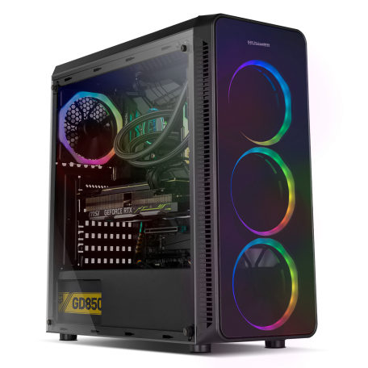

Pues como su propio nombre indica se trata de juegos virtuales. No se juega con objetos físicos como puede ser una pelota o una raqueta sino con unos personajes u objetos a través de una pantalla (si bien necesitas de un objeto físico como puede ser un mando, un teclado y un raton...).

Estos videojuegos se juegan en unas consolas, en las cuales estan todos los circuitos informáticos que procesan y reproducen el juego. Estas consolas necesitan una pantalla para poder jugarlos. Lo normal suele ser enchufar estas consolas a una televisión o monitor mediante cables de video y audio (el más utilizado es el HDMI) pero hay algunas consolas que traen dicha pantalla incluida en la propia consola.
El término eSports se refiere a todo el ámbito relacionado con los videojuegos a nivel profesional. Al igual que puedes hechar una pachanga de fútbol con tus amigos para divertirte pero también hay equipos profesionales como el Real Madrid  o el F.C. Barcelona
o el F.C. Barcelona  cuya profesión consiste en jugar a este deporte, entrenar y ganar competiciones, también hay equipos de jugadores de videojuegos que juegan y entrenan juntos con el objetivo de mejorar y ganar competiciones profesionales.
cuya profesión consiste en jugar a este deporte, entrenar y ganar competiciones, también hay equipos de jugadores de videojuegos que juegan y entrenan juntos con el objetivo de mejorar y ganar competiciones profesionales.

Como es obvio, al igual que en el fútbol están la liga, la copa del rey, la champions, o el mundial; en los videojuegos a nivel profesional hay distintas competiciones tanto a nivel local, como estatal como mundial.

Algunas de las más importantes y conocidas son:
 Fortnite World Cup
Fortnite World Cup

 Fortnite Secret Skirmish
Fortnite Secret Skirmish

 Call of Duty World League (CWL)
Call of Duty World League (CWL)
 estadio.jpg)
 World Championship de League of Legends
World Championship de League of Legends

 Counter Strike: Global Offensive - Majors
Counter Strike: Global Offensive - Majors

 DOTA 2 - The International
DOTA 2 - The International

 Hearthstone Championship Tour
Hearthstone Championship Tour

 Overwatch League
Overwatch League

 Clash Royale - Crown Championship
Clash Royale - Crown Championship

 Rocket League Championship Series
Rocket League Championship Series

He jugado a bastantes tipos de juegos diferentes desde que era pequeño y, como es obvio, mis gustos han ido cambiando a lo largo de los años. Actualmente algunos de mis juegos favoritos serían:
Brawl Stars
Fortnite
Call of Duty Black ops 3

Grand Thef Auto V

Geometry Dash

No me acuerdo a que edad me dieron mi primera consola, lo que si me acuerdo es que desde aquel dia los videojuegos y las consolas se convirtieron en un regalo habitual en mi lista de reyes. Entre las mias y las de mi hermana estas serían todas las consolas que hemos tenido en mi casa por orden desde la más antigua a la más reciente:
Nintendo DS

Nintendo 3DS

Nintendo 3DS XL

XBox 360

Wii

Wii U

PlayStation 4

Nintendo Switch

Ordenador de sobremesa (esto no es del todo una consola, si bien se usan bastante para jugar a videojuegos gracias a su capacidad de mejora pues se les puede ir mejorando la RAM, la tarjeta grafica, etc. Hoy en dia ya hay algunos que vienen diseñados exclusivamente para jugar a videojuegos gracias a sus altísimas cualidades, son los llamados ordenadores gaming).
